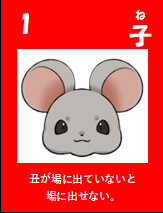
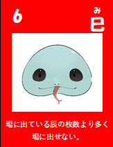
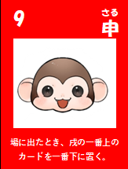
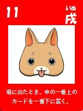
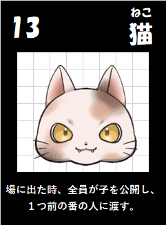

4人対戦 ／ 手札13枚ずつ

丑（うし）のカードが場に出ていない場合、 このカードは出せません。

場にある巳（み）の枚数が、 辰（たつ）の枚数を超えるようには 出せません。

場に出したとき、2枚以上の戌（いぬ）が場にあれば、 一番上の戌（いぬ）を一番下に移動します。

場に出したとき、2枚以上の申（さる）が場にあれば、 一番上の申（さる）を一番下に移動します。

場に出したとき、 全員が手札の子（ね）を公開し、 すべての子（ね）を逆方向（半時計回り）に渡します。
干支のカードを場に並べて、 自分の色の干支を増やすゲームです。
最終的に最も多くの干支を 自分の色にしたプレイヤーが勝利します。
2～4人で対戦します。 各プレイヤーには色が 1色ずつ割り当てられます。
2人対戦では3色、 3人・4人対戦では4色のカードを使用します。
赤の亥（い）が配られたプレイヤーからゲームをスタートします。
最初に出せるカードは赤の亥（い）のみです。
自分の色は確認できますが、 CPUの色はゲーム終了まで公開されません。
① 手札から出せるカードを1枚選び、 対応する干支の場所に置きます。
すでに同じ干支のカードが置かれているなら上に重ねて置きます。
② 手札から1枚選び、 次のプレイヤー（時計回り）に渡します。
③ 次のプレイヤーのターンになります。
出せるカードがない場合は、 手札を公開してから 1枚を次のプレイヤーに渡します。
丑（うし）のカードが場にないと出せません。
巳（み）の枚数が辰（たつ）の枚数を超えるようには 出せません。
場に出したとき、2枚以上の戌（いぬ）が場にあれば、 一番上の戌（いぬ）を一番下に移動します。
場に出したとき、2枚以上の申（さる）が場にあれば、 一番上の申（さる）を一番下に移動します。
場に出したとき、 全員が手札の子（ね）を公開し、 すべての子（ね）を逆方向（半時計回り）に渡します。
手札が0枚になったプレイヤーは ゲームから脱落します。
（脱落しても敗北するわけではありません。）
脱落したプレイヤーは、 以後のカードの受け渡しに参加しません。
次のいずれかの条件を満たすと ゲームが終了します。
・12種類すべての干支が場にそろったとき
・手札が残っているプレイヤーが 1人になったとき
各干支の一番上にある カードの色を確認します。
自分の色が一番上にある干支 1つにつき1点として数えます。
最も得点が高いプレイヤーが勝利します。
同点の場合は、 子・丑・寅・卯・辰・巳・午・未・申・酉・戌・亥 の順番で干支の色を確認し、先に自分の色の干支があったプレイヤーが勝利です。